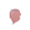
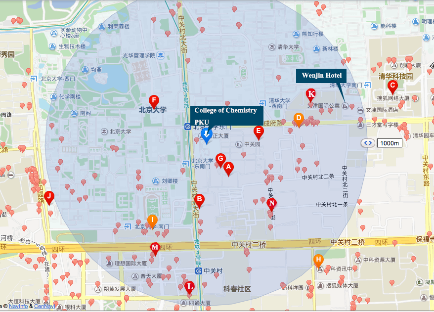

Restaurants around PKU
Below is a map of restaurants around PKU. Actually, all the places labeled with the  symbol on the map are restaurants. For your convenience, we list some of them in the following table.
| Label | English name | Chinese name | Style/Feature |
|---|---|---|---|
| A | Heyuan restaurant | 和园主题餐厅 | Chinese food, Huaiyang cuisine |
| B | Qing Feng Steamed Stuffed Dumpling Shop | 庆丰包子铺 | Chinese food, Baozi, Dumpling |
| C | Quanjude restaurant | 全聚德 | Chinese food, Peking duck |
| D | Wufangyuan restaurant | 五方院餐厅 | Chinese food, Hunan cuisine |
| E | Yiyuan restaurant of zhongguanyuan Global Village, PKU | 北大中关新园怡园餐厅 | Chinese food |
| F | Jiayuan Guilin Rice Noodles | 家园桂林米粉 | Chinese food, Guilin rice noodles |
| G | The restaurant of Zhongguanyuan Global Village, PKU | 中关新园餐厅 | Chinese food |
| H | Qiaojiangnan | 俏江南 | Chinese food, Sichuan cuisine |
| I | Jianbianmatou | 江边码头 | Chinese food, Sichuan cuisine |
| J | Hexianji | 何贤记 | Chinese food, Cantonese cuisine |
| K | Pizza paradise | 披萨乐园 | Pizza |
| L | Zhandian Pizza | 站点披萨 | Pizza |
| M | Pinnuo Italian restaurant | 品诺意大利餐厅 | Italian food |
| N | Keyuan western Muslim restaurant | 科苑西域穆斯林美食城 | Chinese Islamic cuisine, Xinjiang cuisine |
